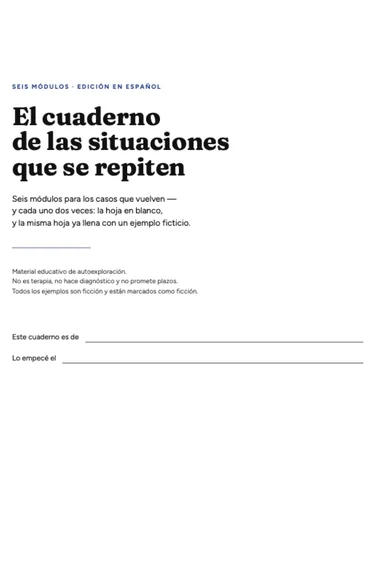
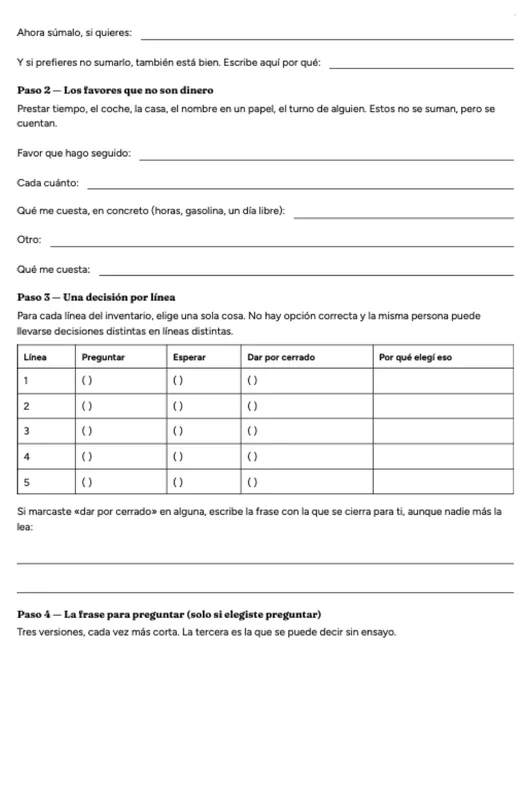
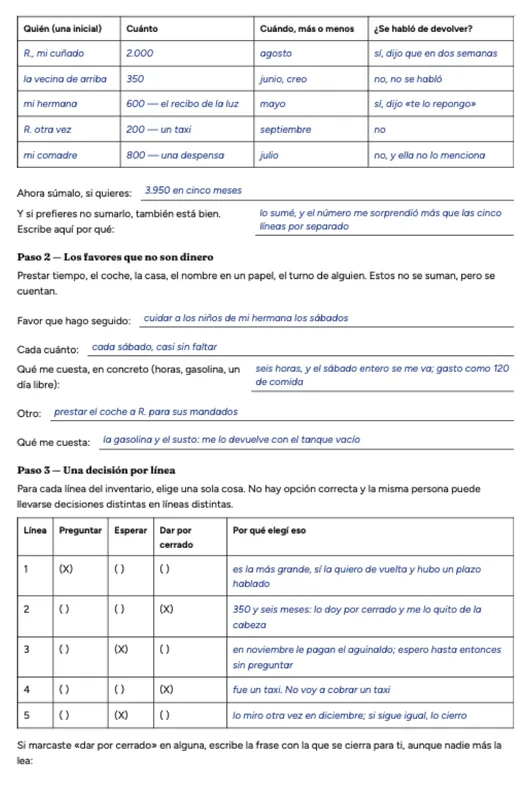
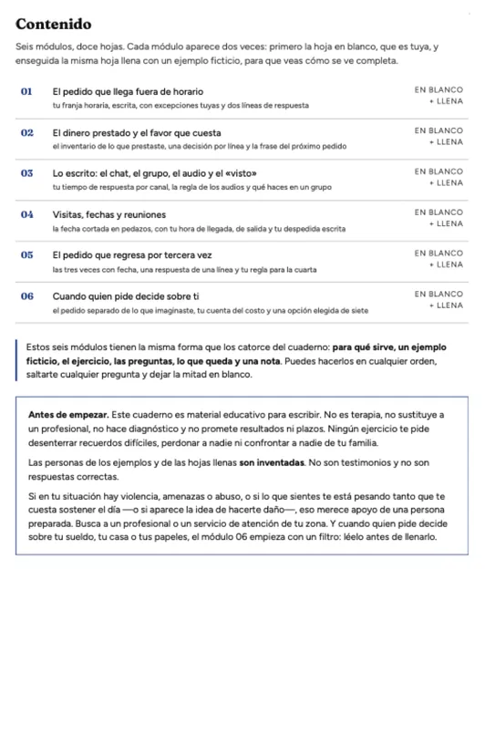

Las situaciones que se repiten Cuaderno aparte · 6 módulos · 12 hojas
La conversación que ya sabes cómo termina.
Seis módulos para los casos que vuelven: la conversación que se repite igual, el pedido que regresa, la situación que ya sabes cómo termina.
Cada módulo viene dos veces: la hoja en blanco para que la llenes, y la misma hoja ya llena con un ejemplo ficticio completo, para que veas la forma antes de escribir la tuya. Doce hojas en total. 27,00 USD, pago único. Si tu país aplica impuesto, el checkout te lo muestra antes de pagar.
Primero miras el material. El pago está más abajo.

Es un cuaderno aparte y es opcional. No reemplaza al cuaderno de 14 módulos ni hace falta para usarlo: si no lo compras, no te quedas sin nada. Lanzamiento inicial, todavía sin testimonios — por eso esta página te enseña las hojas reales y no la opinión de nadie.
02 La misma hoja, dos veces
En blanco y llena — la misma hoja.
Son capturas del archivo que recibes, sin retoque. Las dos de abajo son la misma página del módulo 02: a la izquierda tal como te llega para llenarla, a la derecha la versión ya llena con el ejemplo ficticio.



03 Los seis módulos
Seis casos que vuelven.
- 01El pedido que llega fuera de horario
tu franja horaria, escrita, con excepciones tuyas y dos líneas de respuesta
- 02El dinero prestado y el favor que cuesta
el inventario de lo que prestaste, una decisión por línea y la frase del próximo pedido
- 03Lo escrito: el chat, el grupo, el audio y el «visto»
tu tiempo de respuesta por canal, la regla de los audios y qué haces en un grupo
- 04Visitas, fechas y reuniones
la fecha cortada en pedazos, con tu hora de llegada, de salida y tu despedida escrita
- 05El pedido que regresa por tercera vez
las tres veces con fecha, una respuesta de una línea y tu regla para la cuarta
- 06Cuando quien pide decide sobre ti
cuando quien pide decide sobre tu sueldo, tu casa o tus papeles; este módulo empieza con un filtro: léelo antes de llenarlo
Seis módulos, doce hojas: cada uno aparece dos veces, primero en blanco y enseguida lleno.
04 Para quién
Mejor decirlo antes de que pagues.
Es para quien…
- ya tiene el cuaderno de 14 módulos y quiere llevar los mismos ejercicios a casos concretos que le vuelven;
- se topa siempre con la misma conversación, el mismo pedido o la misma fecha;
- prefiere ver una hoja ya llena antes de escribir la suya;
- lo quiere hacer solo, por escrito, sin contarle su historia a nadie.
No es para quien…
- busca terapia, diagnóstico o acompañamiento profesional — esto no lo sustituye;
- espera un resultado garantizado o una fecha: aquí no hay plazo prometido;
- no quiere escribir nada (las doce hojas son para escribir);
- está en una situación con violencia, amenazas o miedo de alguien: eso merece apoyo de una persona preparada, no un cuaderno;
- cree que esto reemplaza al cuaderno de 14 módulos. No lo reemplaza, y comprarlo es opcional.
05 Precio y condiciones
27,00 USD
Pago único de 27,00 USD: no hay suscripción, ni cobros mensuales, ni un segundo cobro escondido. El cobro lo procesa una plataforma de pago externa, que cobra en la moneda de tu país y añade el impuesto local cuando corresponde — lo verás en la pantalla de pago antes de confirmar.
- Acceso inmediato: terminas el pago y recibes el archivo por el correo de la plataforma.
- Es un PDF llenable en A4, que también se puede imprimir. El archivo es tuyo, no caduca.
- Devolución sin preguntas, 30 días — y te quedas con el archivo.
- Es un cuaderno aparte y opcional: no reemplaza al cuaderno de 14 módulos ni hace falta para usarlo.
¿Dudas antes de pagar? vendawest007@gmail.com
06 Política
Devolución y soporte, tal cual.
Devolución sin preguntas, 30 días. Escribes a vendawest007@gmail.com y te devolvemos los 27,00 USD. No tienes que explicar por qué, no tienes que haber llenado nada, y te quedas con el archivo. No hay condición ni letra chica.
Soporte. Mismo correo. Atiende una persona, no un robot, y puede tardar. Si el archivo no te llega o no te abre, escribe y lo resolvemos.
Este es material educativo de autoexploración. No es terapia ni tratamiento, no hace diagnóstico y no promete resultados ni plazos. Todos los ejemplos son ficción y están marcados como ficción: no son el caso de ninguna persona real. Si al escribir aparece miedo de alguien, violencia o un malestar que no baja, conviene buscar apoyo profesional o el servicio de atención de tu país.
La conversación que ya sabes cómo termina.
Seis módulos, doce hojas: cada una en blanco y la misma ya llena con un ejemplo ficticio. 27,00 USD, pago único (más el impuesto de tu país, si aplica). Devolución sin preguntas, 30 días. Es opcional y no reemplaza al cuaderno de 14 módulos.
Comprar el cuaderno — 27,00 USDSi no es para ti, está bien: el cuaderno de 14 módulos funciona completo sin esto.